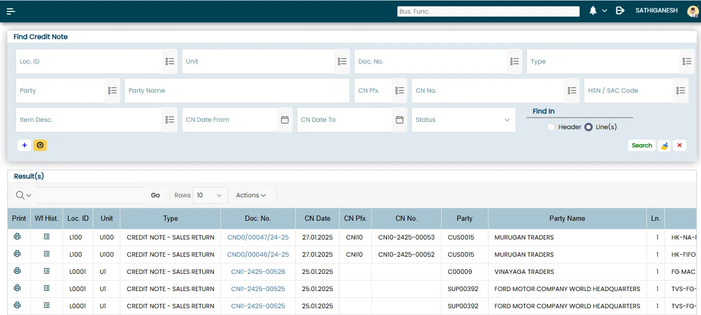
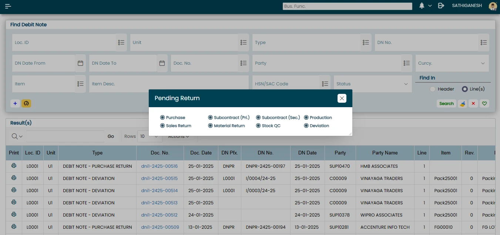

<div data-category="Financials" data-title="Debit Note" data-updated="December 01, 2025" data-contributors="RoadmapIT" data-breadcrumb="Home,Financials,Debit Note">
  <div class="page-content">
    <p>A debit note issue is a document that is issued by a buyer to a seller when the buyer owes the seller money. A debit note issue can be used to request a payment, to charge a penalty, to increase an order, or to reduce a credit. A debit note issue can also be called a debit memo, a debit invoice, or a positive invoice.</p>
    <p>This screen helps user to create a debit note, which is raised against the expense account by selecting the document type as “debit note”, and the prefix will be created for the same.</p>
    <h5>Navigation path:</h5>
    <p class="fs-6">Financial \ Transactions \ Party Document \ Debit Note</p>
    
    <ul style="list-style-type: none; align-content: center">
      <li class="mouse-icon">Click the pending button.</li>
      <li class="mouse-icon">There are multiple type like purchase, Subcontract, Production, Sales Return, Material Return, Stock QC and Deviation.</li>
    </ul>
    
    <ul style="list-style-type: none; align-content: center">
      <li class="mouse-icon">After created the Debit Note form Pending.</li>
      <li class="mouse-icon">Enter the DNI prefix, Reason and Narration.</li>
      <li class="mouse-icon">Click <i class="bi bi-check-lg fs-4 mx-2 text-success"></i> to Save the header.</li>
      <li class="mouse-icon">If creating directly by clicking <i class="bi bi-plus fs-4 mx-2 text-primary"></i> button in the find screen.</li>
      <li class="mouse-icon">If document is to be created with Goods, then in Line select Type as Item orCharge.</li>
      <li class="mouse-icon">Enter the Item and associate GL Account of the Item.</li>
      <li class="mouse-icon">Enter the necessary details.</li>
      <li class="mouse-icon">Click <i class="bi bi-check-lg fs-4 mx-2 text-success"></i> to Save.</li>
      <li class="mouse-icon">Click on create journal.</li>
      <li class="mouse-icon">Press the post button to complete the entry and the document can be forwarded to approval.</li>
    </ul>
  </div>
</div>